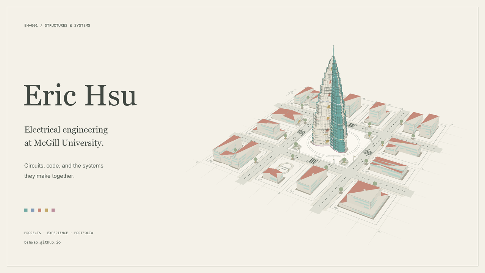

Generated from the model and palette with node scripts/social-card.mjs | python scripts/render-social.py. This illustration is separate from live browser QA.
node scripts/social-card.mjs | python scripts/render-social.py